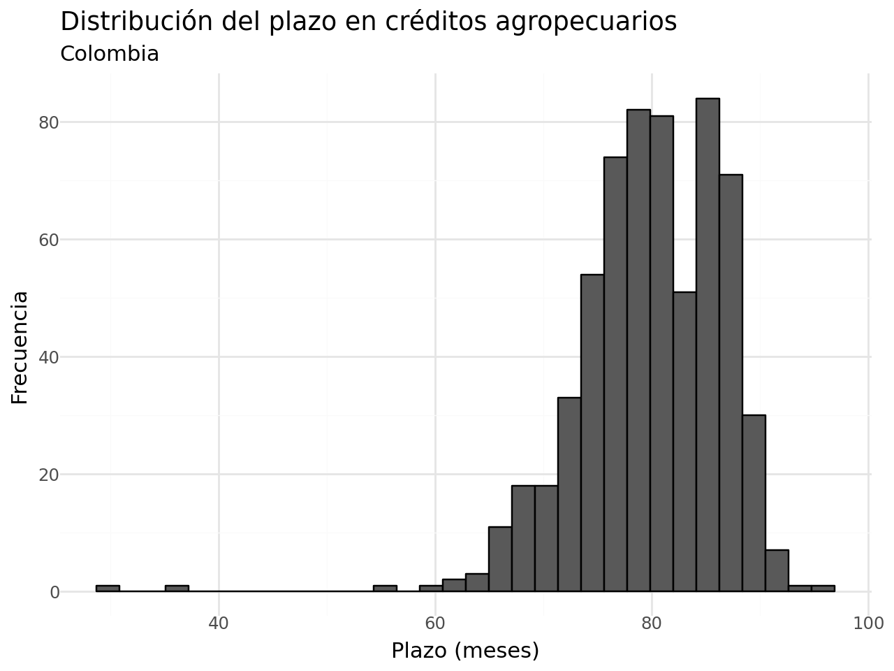
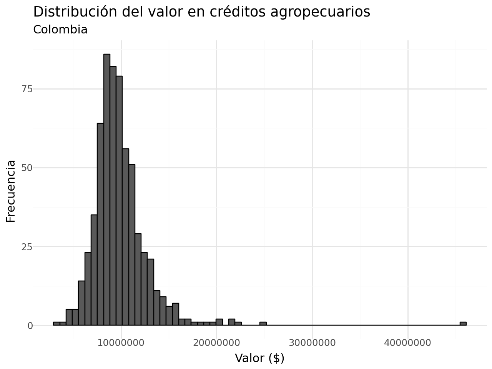
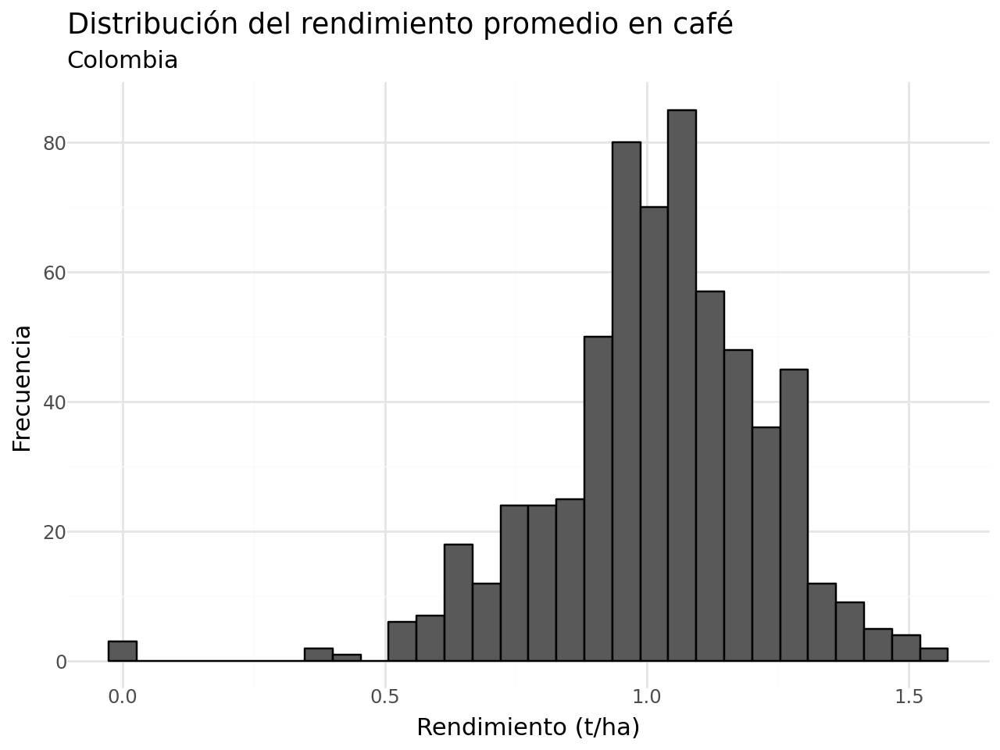
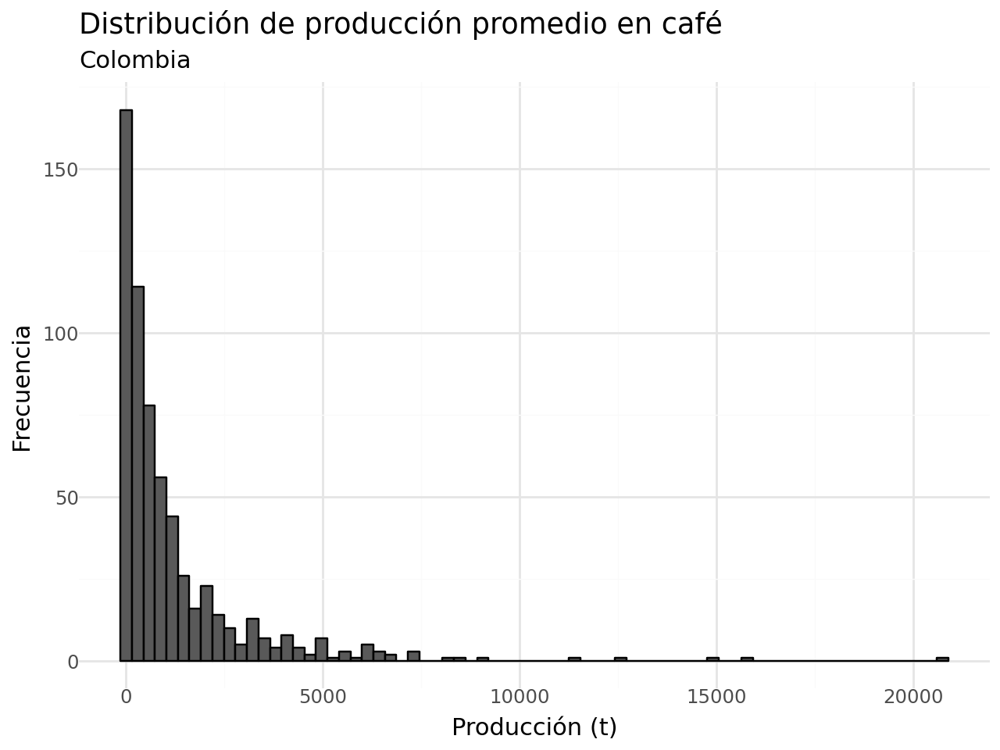
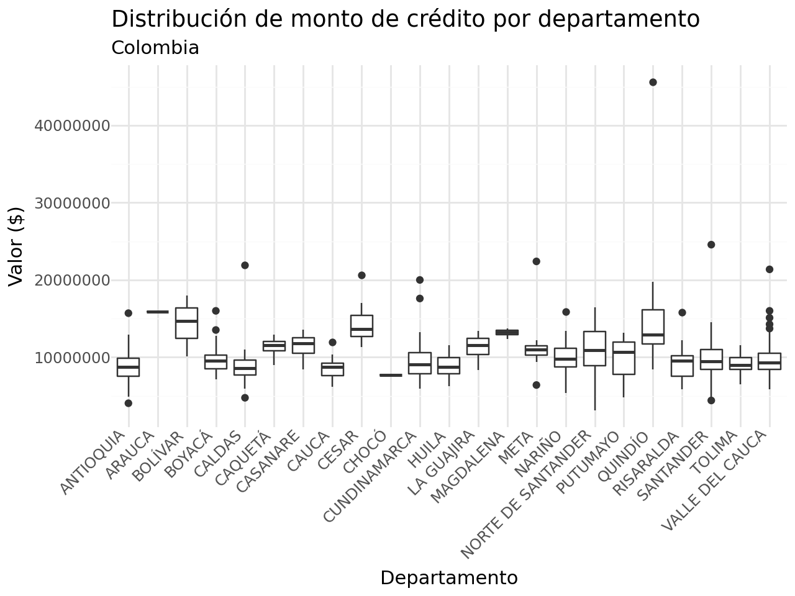
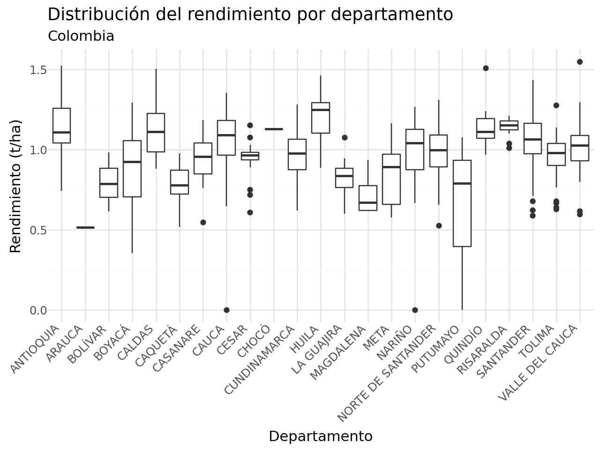
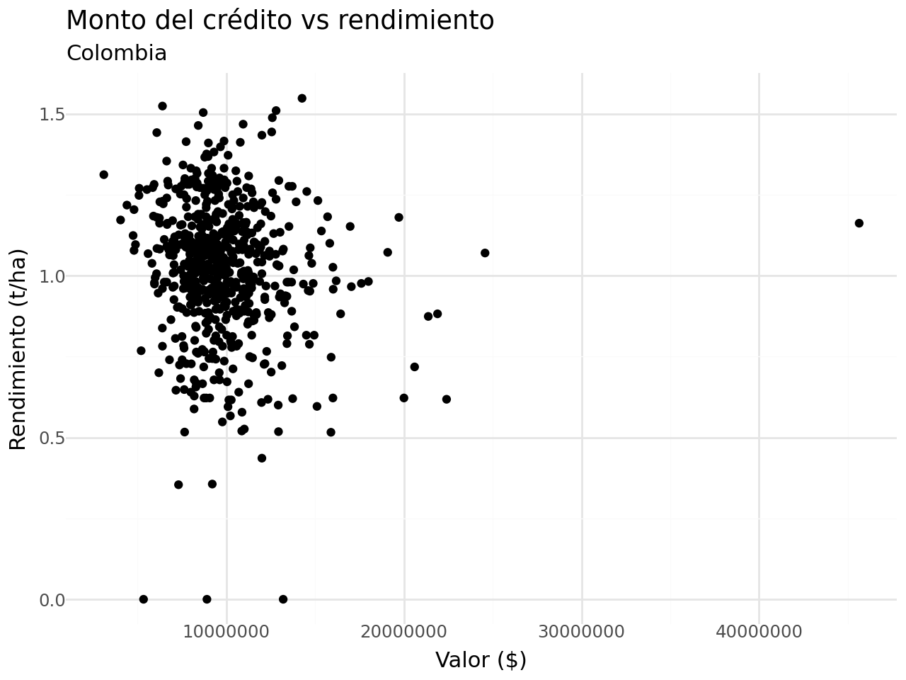

import pandas as pd
import numpy as np
from plotnine import * Resultados Dashboard con Python
Créditos agropecuarios y evaluaciones agropecuarias en café
1 Importando bibliotecas
2 Importando datos
# Datos de créditos agropecuarios en café
creditos_cafe = pd.read_csv("datos/créditos_café_colombia.csv")
creditos_cafe.head()| year_es | mes | fuente_colocacion | id_tipo_prod | tipo_productor | valor_inversion | colocacion | id_depto | departamento_inversion | id_munic | ... | linea_de_credito | linea_de_produccion | id_rubro | destino_de_credito | genero | percent_fag | vlr_inic_garantia | latitud | longitud | cantidad | |
|---|---|---|---|---|---|---|---|---|---|---|---|---|---|---|---|---|---|---|---|---|---|
| 0 | 2021 | 4 | REDESCUENTO | 0 | PEQUEÑO | 10000000.0 | 10000000 | 85 | CASANARE | 85136 | ... | Inversión | SIEMBRAS (I) | 141100 | 141100 Café | H | 80.0 | 8000000.0 | 6.185278 | -72.344444 | 1 |
| 1 | 2021 | 4 | REDESCUENTO | 0 | PEQUEÑO | 6000000.0 | 6000000 | 85 | CASANARE | 85400 | ... | Inversión | SIEMBRAS (I) | 141100 | 141100 Café | H | 80.0 | 4800000.0 | 5.829722 | -72.163333 | 1 |
| 2 | 2021 | 4 | REDESCUENTO | 0 | PEQUEÑO | 8000000.0 | 8000000 | 17 | CALDAS | 17013 | ... | Inversión | SIEMBRAS (I) | 141100 | 141100 Café | H | 80.0 | 6400000.0 | 5.633333 | -75.416667 | 1 |
| 3 | 2021 | 4 | REDESCUENTO | 0 | PEQUEÑO | 25000000.0 | 20000000 | 68 | SANTANDER | 68669 | ... | Inversión | SIEMBRAS (I) | 141100 | 141100 Café | H | NaN | NaN | 6.833333 | -72.750000 | 1 |
| 4 | 2021 | 9 | REDESCUENTO | 0 | PEQUEÑO | 9000000.0 | 9000000 | 73 | TOLIMA | 73520 | ... | Inversión | SIEMBRAS (I) | 141100 | 141100 Café | M | 80.0 | 7200000.0 | 5.133333 | -75.033333 | 1 |
5 rows × 27 columns
# Datos de evaluaciones agropecuarias
eva_cafe = pd.read_csv("datos/evas_café.csv")
eva_cafe.head()| codigo_dane_departamento | departamento | codigo_dane_municipio | municipio | desagregacion_cultivo | cultivo | ciclo_del_cultivo | grupo_cultivo | subgrupo | year_es | periodo | area_sembrada_ha | area_cosechada_ha | produccion_t | rendimiento_t_ha | nombre_cientifico_del_cultivo | codigo_del_cultivo | estado_fisico_del_cultivo | |
|---|---|---|---|---|---|---|---|---|---|---|---|---|---|---|---|---|---|---|
| 0 | 5 | Antioquia | 5001 | Medellín | Café | Café | Permanente | Cultivos tropicales tradicionales | Cultivos tropicales tradicionales | 2019 | 2019 | 465.00 | 417.00 | 517.0000 | 1.24 | Coffea arabica | 2030300 | Pergamino o seco de trilla |
| 1 | 5 | Antioquia | 5001 | Medellín | Café | Café | Permanente | Cultivos tropicales tradicionales | Cultivos tropicales tradicionales | 2020 | 2020 | 450.00 | 394.00 | 452.0000 | 1.15 | Coffea arabica | 2030300 | Pergamino o seco de trilla |
| 2 | 5 | Antioquia | 5001 | Medellín | Café | Café | Permanente | Cultivos tropicales tradicionales | Cultivos tropicales tradicionales | 2021 | 2021 | 437.58 | 378.22 | 276.1006 | 0.73 | Coffea arabica | 2030300 | Pergamino o seco de trilla |
| 3 | 5 | Antioquia | 5001 | Medellín | Café | Café | Permanente | Cultivos tropicales tradicionales | Cultivos tropicales tradicionales | 2022 | 2022 | 420.87 | 387.08 | 241.1800 | 0.62 | Coffea arabica | 2030300 | Pergamino o seco de trilla |
| 4 | 5 | Antioquia | 5001 | Medellín | Café | Café | Permanente | Cultivos tropicales tradicionales | Cultivos tropicales tradicionales | 2023 | 2023 | 368.73 | 335.26 | 238.6600 | 0.71 | Coffea arabica | 2030300 | Pergamino o seco de trilla |
3 Municipios en ambas tablas
- Primero identificamos a partir de cuáles variables podríamos unir las dos bases de datos.
- ¿Unimos los créditos a las EVAs o las EVAs a los créditos? En este caso nos interesan municipios que estén en ambas bases de datos.
- ¿Cuántos municipios hay en la base de datos de créditos?
- ¿Cuántos municipios hay en la base de datos de EVAs?
# Total de municipios direrentes
mpios_unicos_creditos = creditos_cafe["id_munic"].unique()
mpios_unicos_evas = eva_cafe["codigo_dane_municipio"].unique()
print(len(mpios_unicos_creditos))
print(len(mpios_unicos_evas))717
640- ¿Cuántos municipios comparten las dos bases de datos?
sum(np.isin(mpios_unicos_creditos, mpios_unicos_evas))np.int64(623)4 Resumen por municipio
- Para simplificar el ejercicio vamos a calcular algunas métricas estadísticas por municipio.
resumen_creditos = (
creditos_cafe
.groupby(
["id_depto", "departamento_inversion", "id_munic", "municipio_inversion"]
)
.agg(
promedio_plazo = ("plazo", "mean"),
promedio_valor = ("vlr_inic_garantia", "mean")
)
.reset_index()
)
resumen_creditos.head()| id_depto | departamento_inversion | id_munic | municipio_inversion | promedio_plazo | promedio_valor | |
|---|---|---|---|---|---|---|
| 0 | 5 | ANTIOQUIA | 5001 | MEDELLÍN | 67.714286 | 1.100000e+07 |
| 1 | 5 | ANTIOQUIA | 5002 | ABEJORRAL | 79.545455 | 1.009633e+07 |
| 2 | 5 | ANTIOQUIA | 5004 | ABRIAQUÍ | 75.648649 | 9.169697e+06 |
| 3 | 5 | ANTIOQUIA | 5021 | ALEJANDRÍA | 88.168317 | 1.119543e+07 |
| 4 | 5 | ANTIOQUIA | 5030 | AMAGÁ | 70.026316 | 6.445704e+06 |
resumen_evas = (
eva_cafe
.groupby(
["codigo_dane_departamento", "departamento", "codigo_dane_municipio", "municipio"]
)
.agg(
promedio_rto = ("rendimiento_t_ha", "mean"),
promedio_pdn = ("produccion_t", "mean")
)
.reset_index()
)
resumen_evas.head()| codigo_dane_departamento | departamento | codigo_dane_municipio | municipio | promedio_rto | promedio_pdn | |
|---|---|---|---|---|---|---|
| 0 | 5 | Antioquia | 5001 | Medellín | 0.890 | 344.98812 |
| 1 | 5 | Antioquia | 5002 | Abejorral | 1.372 | 3445.49862 |
| 2 | 5 | Antioquia | 5004 | Abriaquí | 1.332 | 134.02920 |
| 3 | 5 | Antioquia | 5021 | Alejandría | 1.214 | 589.95256 |
| 4 | 5 | Antioquia | 5030 | Amagá | 1.222 | 573.34512 |
5 Unión de datos
- Ahora unimos los dos resúmenes. La unión se realiza teniendo en cuenta la variable municipio, pero es importante tener en cuenta que tienen diferente nombre en cada tabla.
print(resumen_creditos.columns)
print(resumen_evas.columns)Index(['id_depto', 'departamento_inversion', 'id_munic', 'municipio_inversion',
'promedio_plazo', 'promedio_valor'],
dtype='object')
Index(['codigo_dane_departamento', 'departamento', 'codigo_dane_municipio',
'municipio', 'promedio_rto', 'promedio_pdn'],
dtype='object')- Opcional: para facilitar el proceso podemos hacer dos cosas antes de unir las bases de datos:
- Editar los nombres de la variable que es común en ambas tablas y a través de la cual realizamos la unión.
- Como el nombre del municipio y departamento está en ambas tablas, solo es necesario que lo mantengamos en una tabla, ya que se repetirá.
resumen_evas2 = (
resumen_evas
.rename(columns = {"codigo_dane_municipio": "id_munic"})
.loc[:, ["id_munic", "promedio_rto", "promedio_pdn"]]
)
resumen_evas2.head()| id_munic | promedio_rto | promedio_pdn | |
|---|---|---|---|
| 0 | 5001 | 0.890 | 344.98812 |
| 1 | 5002 | 1.372 | 3445.49862 |
| 2 | 5004 | 1.332 | 134.02920 |
| 3 | 5021 | 1.214 | 589.95256 |
| 4 | 5030 | 1.222 | 573.34512 |
- Ahora unimos las dos tablas.
df_completa = pd.merge(resumen_creditos, resumen_evas2, on = "id_munic")
df_completa.head()| id_depto | departamento_inversion | id_munic | municipio_inversion | promedio_plazo | promedio_valor | promedio_rto | promedio_pdn | |
|---|---|---|---|---|---|---|---|---|
| 0 | 5 | ANTIOQUIA | 5001 | MEDELLÍN | 67.714286 | 1.100000e+07 | 0.890 | 344.98812 |
| 1 | 5 | ANTIOQUIA | 5002 | ABEJORRAL | 79.545455 | 1.009633e+07 | 1.372 | 3445.49862 |
| 2 | 5 | ANTIOQUIA | 5004 | ABRIAQUÍ | 75.648649 | 9.169697e+06 | 1.332 | 134.02920 |
| 3 | 5 | ANTIOQUIA | 5021 | ALEJANDRÍA | 88.168317 | 1.119543e+07 | 1.214 | 589.95256 |
| 4 | 5 | ANTIOQUIA | 5030 | AMAGÁ | 70.026316 | 6.445704e+06 | 1.222 | 573.34512 |
- ¿Cuál es la dimensión de esta nueva base de datos?
df_completa.shape(625, 8)6 Visualizaciones
- Plazo del crédito:
(
df_completa >>
ggplot(aes(x = "promedio_plazo")) +
geom_histogram(color = "black") +
labs(x = "Plazo (meses)",
y = "Frecuencia",
title = "Distribución del plazo en créditos agropecuarios",
subtitle = "Colombia") +
theme_minimal()
)c:\Users\edimer.david\AppData\Local\miniconda3\envs\semillero\Lib\site-packages\plotnine\stats\stat_bin.py:109: PlotnineWarning: 'stat_bin()' using 'bins = 32'. Pick better value with 'binwidth'.
- Valor del crédito:
(
df_completa >>
ggplot(aes(x = "promedio_valor")) +
geom_histogram(color = "black") +
labs(x = "Valor ($)",
y = "Frecuencia",
title = "Distribución del valor en créditos agropecuarios",
subtitle = "Colombia") +
theme_minimal()
)c:\Users\edimer.david\AppData\Local\miniconda3\envs\semillero\Lib\site-packages\plotnine\stats\stat_bin.py:109: PlotnineWarning: 'stat_bin()' using 'bins = 66'. Pick better value with 'binwidth'.
c:\Users\edimer.david\AppData\Local\miniconda3\envs\semillero\Lib\site-packages\plotnine\layer.py:284: PlotnineWarning: stat_bin : Removed 2 rows containing non-finite values.
- Rendimiento del cultivo de café:
(
df_completa >>
ggplot(aes(x = "promedio_rto")) +
geom_histogram(color = "black") +
labs(x = "Rendimiento (t/ha)",
y = "Frecuencia",
title = "Distribución del rendimiento promedio en café",
subtitle = "Colombia") +
theme_minimal()
)c:\Users\edimer.david\AppData\Local\miniconda3\envs\semillero\Lib\site-packages\plotnine\stats\stat_bin.py:109: PlotnineWarning: 'stat_bin()' using 'bins = 30'. Pick better value with 'binwidth'.
- Producción en toneladas del cultivo de café:
(
df_completa >>
ggplot(aes(x = "promedio_pdn")) +
geom_histogram(color = "black") +
labs(x = "Producción (t)",
y = "Frecuencia",
title = "Distribución de producción promedio en café",
subtitle = "Colombia") +
theme_minimal()
)c:\Users\edimer.david\AppData\Local\miniconda3\envs\semillero\Lib\site-packages\plotnine\stats\stat_bin.py:109: PlotnineWarning: 'stat_bin()' using 'bins = 72'. Pick better value with 'binwidth'.
- ¿En qué departamentos se solicita mayor monto de créditos?
(
df_completa >>
ggplot(aes(x = "departamento_inversion", y = "promedio_valor")) +
geom_boxplot() +
labs(x = "Departamento",
y = "Valor ($)",
title = "Distribución de monto de crédito por departamento",
subtitle = "Colombia") +
theme_minimal() +
theme(axis_text_x = element_text(angle = 45, hjust = 1))
)c:\Users\edimer.david\AppData\Local\miniconda3\envs\semillero\Lib\site-packages\plotnine\layer.py:284: PlotnineWarning: stat_boxplot : Removed 2 rows containing non-finite values.
- ¿En qué departamentos hay mayores rendimientos?
(
df_completa >>
ggplot(aes(x = "departamento_inversion", y = "promedio_rto")) +
geom_boxplot() +
labs(x = "Departamento",
y = "Rendimiento (t/ha)",
title = "Distribución del rendimiento por departamento",
subtitle = "Colombia") +
theme_minimal() +
theme(axis_text_x = element_text(angle = 45, hjust = 1))
)
- ¿Existe asociación entre el monto del crédito y el rendimiento?
df_completa[["promedio_valor", "promedio_rto"]].corr()| promedio_valor | promedio_rto | |
|---|---|---|
| promedio_valor | 1.000000 | -0.098442 |
| promedio_rto | -0.098442 | 1.000000 |
- Graficamos el diagrama de dispersión:
(
df_completa >>
# df_completa[df_completa["promedio_valor"] < 4e+07] >>
ggplot(aes(x = "promedio_valor", y = "promedio_rto")) +
geom_point() +
labs(x = "Valor ($)",
y = "Rendimiento (t/ha)",
title = "Monto del crédito vs rendimiento",
subtitle = "Colombia") +
theme_minimal()
)c:\Users\edimer.david\AppData\Local\miniconda3\envs\semillero\Lib\site-packages\plotnine\layer.py:364: PlotnineWarning: geom_point : Removed 2 rows containing missing values.
- Ahora relacionamos el valor del crédito con la producción:
df_completa[["promedio_valor", "promedio_pdn"]].corr()| promedio_valor | promedio_pdn | |
|---|---|---|
| promedio_valor | 1.000000 | -0.099401 |
| promedio_pdn | -0.099401 | 1.000000 |
- Gráfico:
(
# df_completa >>
df_completa[df_completa["promedio_valor"] < 4e+07] >>
ggplot(aes(x = "promedio_valor", y = "promedio_pdn")) +
geom_point() +
labs(x = "Valor ($)",
y = "Producción (t)",
title = "Monto del crédito vs producción",
subtitle = "Colombia") +
theme_minimal() +
scale_y_log10()
)c:\Users\edimer.david\AppData\Local\miniconda3\envs\semillero\Lib\site-packages\pandas\core\arraylike.py:399: RuntimeWarning: divide by zero encountered in log10